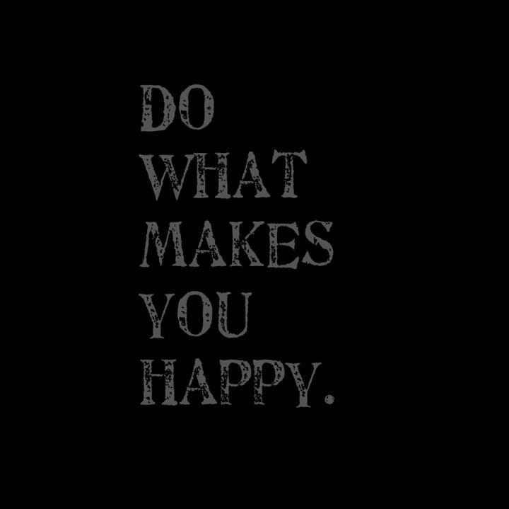
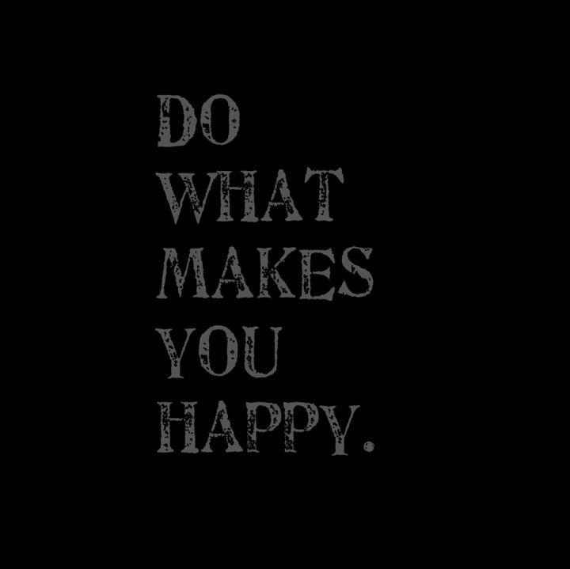

Why do I code:
It's fun. It's creative. It's unlimited. It's the future.
What makes me smile:
My family. Kisses from my 6 year old. Silly pet videos
More about me:
I was born in Oklahoma but mostly grew up in Texas. In 1992 I graduated high school in San Antonio and then attended Texas A&M, where I obtained a Bachelors of Science in psychology degree. After I graduated from Texas A&M in 1997, I moved to Oklahoma where I obtained an Associates in Business degree from Tulsa Community College. During that time I secured a position in the student loan industry, where I worked for the following eight years. In late 2006 I began working in the Oil and Gas industry, and temporarily lived in Arkansas as an independent contractor. In 2008, I met my wife, Monica and her two young children. I continued to work in the Oil and Gas industry, eventually leaving Arkansas, working for a short time in Missouri, then securing a position in Texas in early 2010. We relocated to San Antonio, Texas and my wife and I were married on New Year's Eve 2010. The following year I became a father to my daughter, completing our family. Currently, I continue to work in the Oil and Gas industry where I find myself looking for a more fulfilling and satisfying career change.
Ask me about:
Virtual Reality, Crypto Currencies, My wifes 16+ tortoises. Our pet mini pig, Truman.
Family
Monica Houghtling

Jadalyn, Alaina, Adam

Truman the Pig